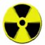
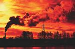
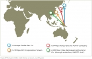

Crédit Mutuel - CIC
Description
Ayant une importante activité de banque de détail en France, le groupe Crédit Mutuel comprend le réseau du Crédit Mutuel et l’ensemble de ses filiales, dont le CIC.
Il possède diverses filiales : Monabanq, Fortuneo, etc...
Appréciation générale
Bien que moins exposé à l'international que ses confrères, le Crédit Mutuel est toutefois susceptible d'être impliqué dans des projets ou secteurs controversés, comme par exemple la centrale à charbon de Kusile en Afrique du Sud ou la production d'armes nucléaires.
Si on déplore les limites des politiques sectorielles des autres grandes banques françaises qui continuent de financer des secteurs à risques et incompatibles avec des sociétés soutenables, celles-ci reflètent toutefois une prise de conscience par les banques de leur responsabilité. Or le Crédit Mutuel n'a adopté aucune de ses politiques, signe qu'il reste sourd aux enjeux sociaux et environnementaux.
Alors que toutes les grandes banques françaises ont pris des engagements en amont de la COP21 à réduire leurs financements au secteur du charbon, seul le Crédit Mutuel n'a pris aucun engagement climat.
| Niveau | Commentaires | |
|---|---|---|
| Environnement |  |
Aucune prise en compte en dehors d'une poche de produits 'éthiques'. |
| Climat | Le Crédit Mutuel n'a pris aucun engagement dans la lutte contre les changements climatiques. | |
| Transparence | |
Le Crédit Mutuel n'offre aucune transparence dans ses activités. |
| Politiques sectorielles | Le Crédit Mutuel n'a adopté aucune politique sectorielle de réduction des risques induits par ses activités de financement et d'investissement. | |
| Energies renouvelables | |
Carton rouge au Crédit Mutuel qui ne fournit aucune information à ce sujet. |
| Paradis fiscaux | Le groupe Crédit Mutuel-CIC possède 65 filiales dans les paradis fiscaux et judiciaires. | |
| Energies fossiles - charbon | Le Crédit Mutuel a financé les énergies fossiles à hauteur de 1,2 milliard d'euros entre 2009 et 2014. | |
| Emissions financées | Le Crédit Mutuel ne calcule pas ses émissions induites par ses activités de financement et d'investissement. Les Amis de la Terre ont estimé ces émissions à plus de 280 millions de tonnes d'équivalent CO2 en 2010 |
| Liste noire des projets controversés financés | ||
| Nom | Photo | Description |
| Nucléaire |  | Filière nucléaire. Celle-ci va de l'extraction de l'uranium (par exemple dans les mines du Niger) au retraitement des déchets nucléaires, en passant par l'exploitation de centrales nucléaires et la production d'armes nucléaires. source - |
| Centrales à charbon de Medupi et Kusile (Afrique du Sud) |  | 2 méga-centrales à charbon de 4800 MW chacune, qui nécessiteront l'ouverture de 40 nouvelles mines de charbon. Projets très polluants qui profiteront en premier lieu aux multinationales étrangères tournées vers l’exportation. Augmentation du prix de l'électricité pour la population. |
| Gaz naturel liquéfié (Papouasie Nouvelle Guinée) |  | Colossal projet industriel (extraction, transformation et gazoduc) qui vise l’exportation sur les marchés asiatiques : déplacements forcés des populations, violation des droits des communautés indigènes, conflits sociaux et délitement du tissu social, ce projet implique la déforestation massive de zones de conservation et est source d’une pollution dangereuse de l’air, de l’eau et de la terre |
ATTENTION : Ces projets controversés ne constituent que quelques exemples.